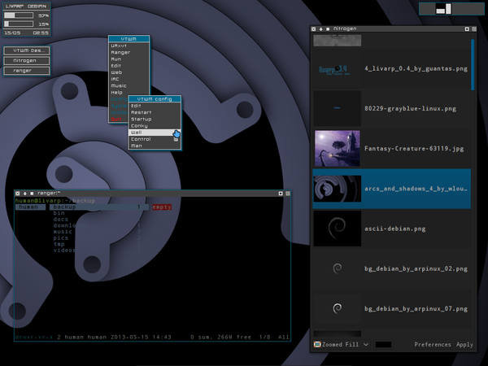

lang fr|gb

the vtwm session
vtwm aka Virtual Tabbed window Manager is born in 1992 from twm sources. vtwm is an ultra basic window-manager but full of options. old-style, its complete configuration stands in one text file ~/.vtwmrc. vtwm is a 'floating' wm, windows are free on screen. it is fast, responsive and lightweight. it is ideal for small hardware resources.
screenshot
{kind=link}
startup
vtwm is launched by the ~/bin/start/vtwm_start.sh script.
to change startup applications, edit this file:
components
livarp vtwm session has several elements:
- IconManager: icon box and tasklist. configured from ~/.vtwmrc.
- VirtualDesktop: a simple pager. configued from ~/.vtwmrc.
- Vtwm menu: available with left-click on desktop. configured from ~/.vtwmrc.
- conky: ultra minimal, displaying cpu & ram conso, date & time. configured from ~/.conky/.conkyrc_vtwm.
- Livarp menu: available on top-let corner, display livarp menu and systray. configured from ~/.config/fbpanel/default.
configuration
to configure conky, you have to edit its conkyrc:
fbpanel with menu and systray. you can add plugins. please visit the dedicated page..
vtwm configuration stands in one file: ~/.vtwmrc
- available from vtwm menu: section config:edit
- with a command:
vim .vtwmrc
the file is commented and control all vtwm options.
after modifications, you have to reload vtwm with the Ctrl+Alt+r keybind.
keybinds/mousebinds
editable from ~/.vtwmrc, here is a list from livarp vtwm key/mousebinds:
menus:
- vtwm menu: left-click on desktop
- livarp menu: top-left corner of the screen
control:
- reload vtwm: Ctrl+Alt+r
- quit vtwm:Ctrl+Shift+q
- quit livarp: Ctrl+Shift+Alt+q
windows:
- close client: Super+q
- kill client: Super+x or middle-click on icon
- iconify client: Super+i
- maximize client: Super+m
- previous client: Alt+Shit+Tab
- next client: Alt+Tab
- client menu: right-click (title)*
- move / lower: Alt+right-click (window or icon)*
- move: left-click (title)*
- toggle iconify: Alt+middle-click (window or icon)*
- resize / raise: Alt+left-click (window or icon)* or left-click (title)*
- toggle lower/raise: middle-click (title)*
navigation:
- desktop on right: Ctrl+Right or scroll up
- desktop on left:Ctrl+Left or scroll down
shortcuts:
- launch default terminal: Ctrl+Enter
- launch terminal: Super+t
- launch dmenu: Super+d
- launch ranger: Super+r
- launch rox-filer: Super+Shift+r
- launch firefox: Super+w
- volume control: Super+v
window title buttons, from left to right:
close -- iconify -- nail(fix) -- fullscreen -- resize